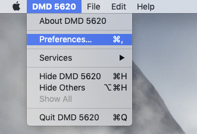
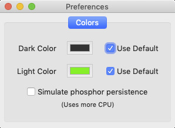

You can bring up the system preferences by selecting the Preferences... menu item from the DMD 5620 menu, or by pressing Command-comma on the keyboard.
The preferences window will be displayed.
The default color scheme of the terminal is bright green on black. This matches the colors of the phosphor on a real DMD 5620.
However, it can become annoying to look at for long periods of time, so it is possible to change the color scheme to your liking.
This pane allows you to select both a dark and a light color for the terminal.
To change edither the dark or the light color, first un-check the corresponding Use Default checkbox. Then click on the adjacent color swatch, and a color picker dialog will open. Use it to select your desired color.
If you ever wish to return to the default colors, just check the corresponding Use Default checkbox again.
The real DMD 5620 terminal has a very slow phosphor. This means that it takes some time for images to fade from the screen, and that the mouse draws trails behind it when it moves.
This effect can be emulated by clicking on the checkmark labelled Simulate phosphor persistence. Note: this effect can cause a lot more CPU use, especially on older systems.